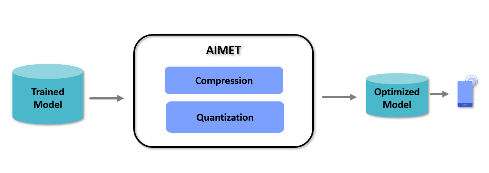

AI Model Efficiency Toolkit User Guide
Overview
AI Model Efficiency Toolkit (AIMET) is a software toolkit that enables users to quantize and compress models. Quantization is a must for efficient edge inference using fixed-point AI accelerators.
AIMET optimizes pre-trained models (e.g., FP32 trained models) using post-training and fine-tuning techniques that minimize accuracy loss incurred during quantization or compression.
AIMET currently supports PyTorch, TensorFlow, and Keras models.
The above picture shows a high-level view of the workflow when using AIMET. The user will start with a trained model in either the PyTorch, TensorFlow, or Keras training framework. This trained model is passed to AIMET using APIs for compression and quantization. AIMET returns a compressed/quantized version of the model that the users can fine-tune (or train further for a small number of epochs) to recover lost accuracy. Users can then export via ONNX/meta/h5 to an on-target runtime like Qualcomm® Neural Processing SDK.
Features
AIMET supports two sets of model optimization techniques:
Model Quantization: AIMET can simulate behavior of quantized HW for a given trained model. This model can be optimized using Post-Training Quantization (PTQ) and fine-tuning (Quantization Aware Training - QAT) techniques.
Model Compression: AIMET supports multiple model compression techniques that allow the user to take a trained model and remove redundancies, resulting in a smaller model that runs faster on target.
Release Information
For information specific to this release, please see Release Notes and Known Issues.
Installation Guide
Please visit the AIMET Installation for more details.